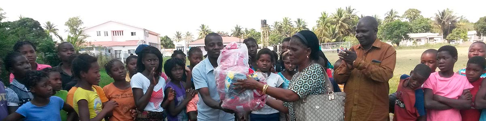

OURMISSION
We help children, families and communities reach their potential by providing resources that have immediate and lasting change.
We all know how important sports and recreation are in developing children's skills for a brighter future. At our current project in Mozambique, Africa, it started with a simple soccer ball. Soon thereafter that gift of a ball grew to team uniforms and organized competition. Today our goal is to replace a dusty dirty soccer ground to a beautiful green, grass field.
To the community of Pambara, it’s more than just a soccer field. It’s a field of dreams. A place where kids can practice, play, learn, grow and develop into future leaders.
Please help us make their “field of dreams” a reality.
All children deserve the opportunity to compete in team sports, experience the pride of donning a new uniform and enjoy the pleasures healthy recreation provides. But we need your help to make those things happen for the children of Pambara, Mozambique.
Simply click on the “Donate Now” button below to make your tax-deductible donation.
No amount is too small—or for that matter too large!
Thank you for your time and your generosity in support of our Field of Dreams.
100% of donations received go directly to the projects you support!
Donate Now At the House of Giving, our purpose is to simply give back to those less fortunate. Since its inception in 2001, House of Giving has provided significant contributions and resources to communities in the United States and other international communities in need.
We are registered 501(C-3) and 100% of the donations we receive go directly to projects designated by our donors.
Our projects focus on basic pillars for social and economic development such as; nutrition, clean water, education and adolescent team sports.
Malnutrition is associated with about half of all child deaths worldwide. Malnourished children have lower resistance to infection; they are more likely to die from common childhood ailments like diarrhea diseases and respiratory infections.
We help children, families and communities reach their potential by providing resources that have immediate and lasting change.
To transform lives by inspiring individuals and organizations to give back to those less fortunate.
We believe in the law of reciprocity and by serving others we are blessed. Our desire is that everyone should have the opportunity to experience physical, emotional and spiritual wellness. We are grateful to our donors and sponsors and do our best to be accountable and transparent with the resources and donations we receive.
After traveling the world and seeing the tremendous amount of families in need, Michael and Susan Ellison founded The House of Giving, a 501 (c) (3) non-profit organization that receives tax-deductible donations to fund wellness research, education and a variety of life-sustaining amenities.
For nearly two decades, we’ve been providing clean water, basic nutrition and education to those less fortunate. In 2015 while implementing our nutrition and water programs, we saw the opportunity to introduce team sports into our education programs to further encourage kids to play together, stay in school together and promote healthy, active lifestyles.
Email:
contact@houseofgiving.orgOffice:
480-337-4132
Address:
House of Giving
16100 N. Greenway Hayden Loop, Suite 950
Scottsdale, Arizona 85260 USA
Simply click on the “Donate Now” button below to make your tax-deductible donation.
No amount is too small—or for that matter too large!
Thank you for your time and your generosity in support of our Field of Dreams.
100% of donations received go directly to the projects you support!
Donate Now